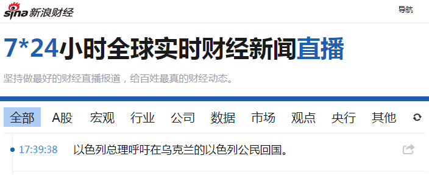
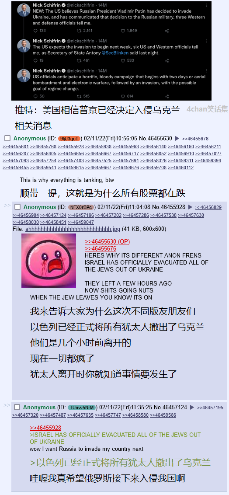
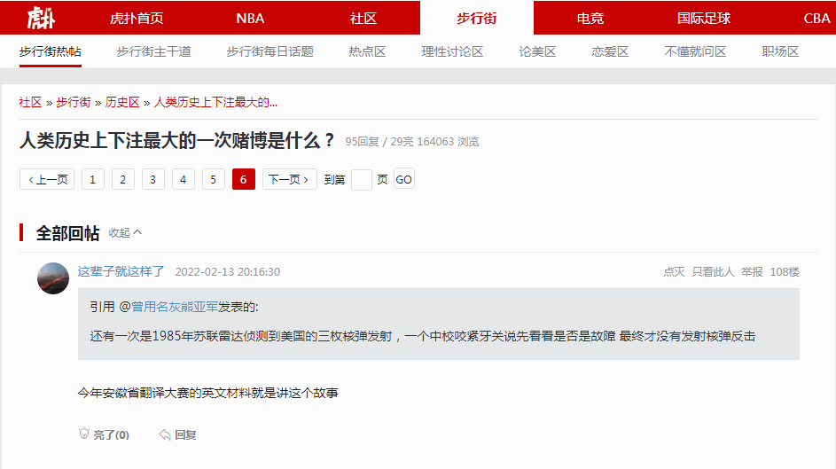
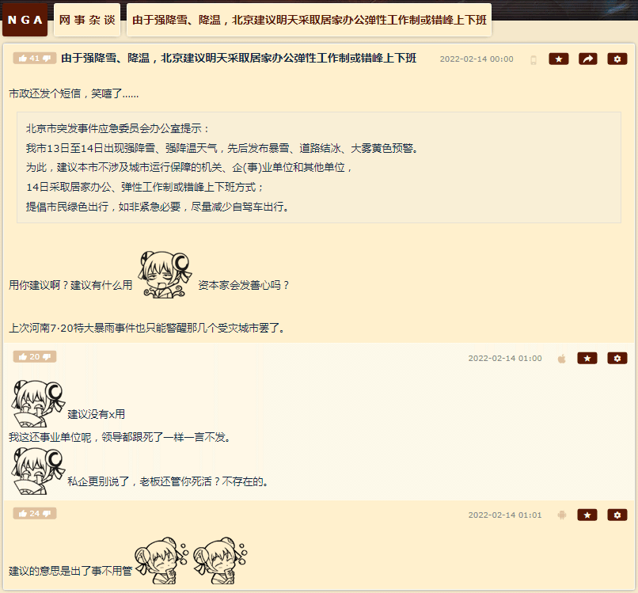
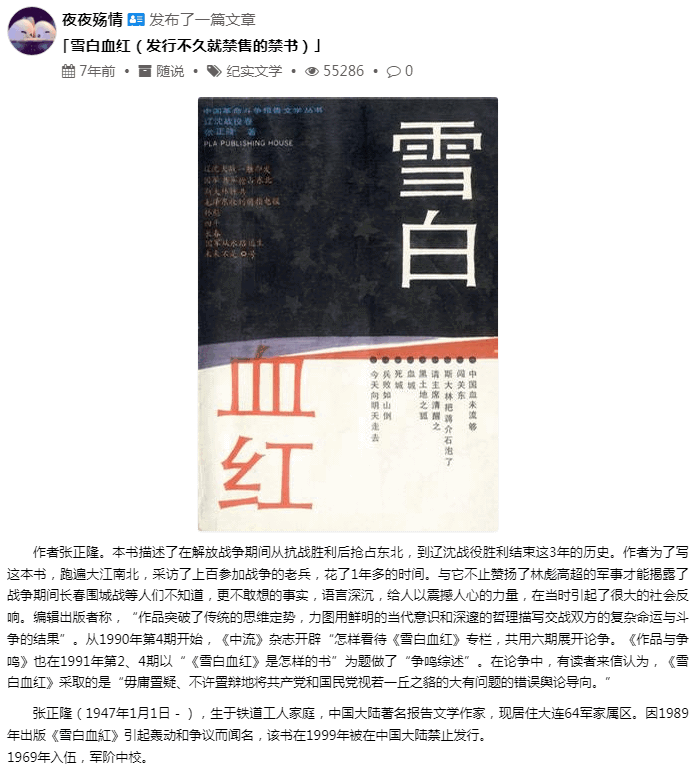

前一篇
目录
后一篇
主页
［
20220213
］“如此说来去年11月3日家贼‘以生命严守党的机密’时李自成或毛泽东就围困幽州城了？”
“那么三个多月过去了，是崇祯爷吊死歪脖树呢，还是傅作义阵前起义弃暗投明（但还在绥远保留枪支弹药和电台）呢？”



补充情报：


原来幽州外景片场摄影棚在翻拍1948年共军包围长春饿死六十万人或十二万人的划时代红色文艺精品吖。
2022-02-13 20:24:04